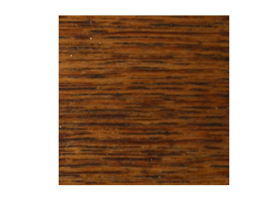
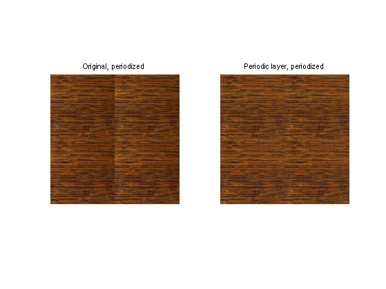
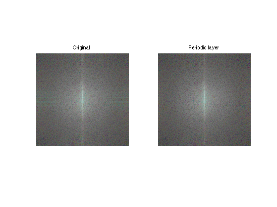
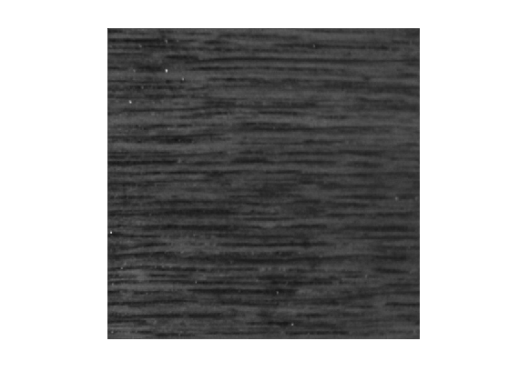
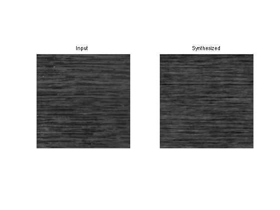
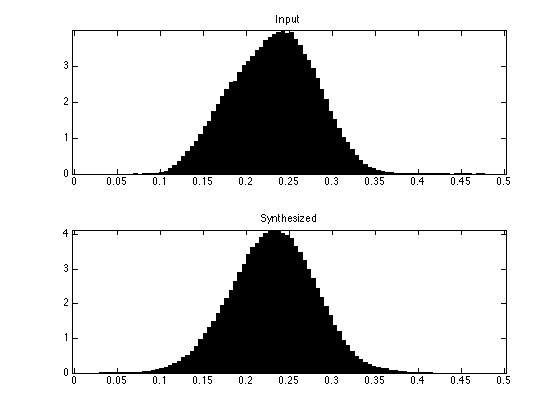
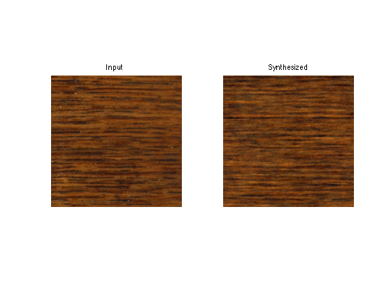
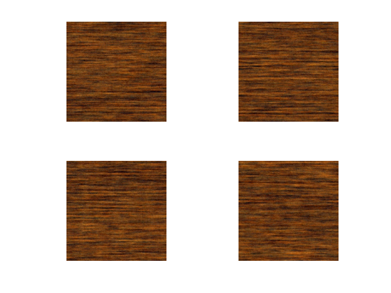
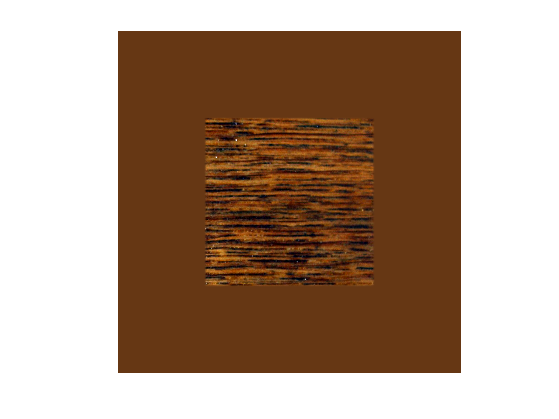
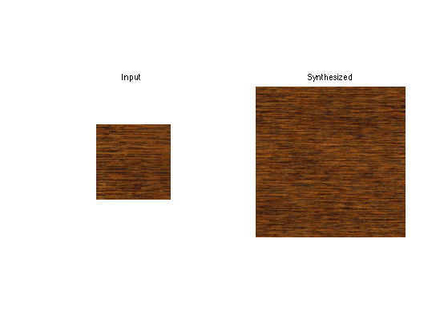

Gaussian Models for Texture Synthesis
This numerical tour explores texture synthesis using Gaussian random fields. Image synthesis is obtained by drawing an image at random from a random distribution that is learned from an input texture exemplar.
Contents
We use here the spot noise model developped in
B. Galerne, Y. Gousseau and J.-M. Morel, Random Phase Textures: Theory and Synthesis, IEEE Transactions on Image Processing, 20(1), pp. 257-267, 2011.
We derive this model as being a Maximamu Likelihood Estimate (MLE) of a stationary Gaussian vector parameters from a single input texture. Although this is not the original derivation of the model, it is stricly equivalent to the method of Galerne et al.
Installing toolboxes and setting up the path.
You need to download the following files: signal toolbox and general toolbox.
You need to unzip these toolboxes in your working directory, so that you have toolbox_signal and toolbox_general in your directory.
For Scilab user: you must replace the Matlab comment '%' by its Scilab counterpart '//'.
Recommandation: You should create a text file named for instance numericaltour.sce (in Scilab) or numericaltour.m (in Matlab) to write all the Scilab/Matlab command you want to execute. Then, simply run exec('numericaltour.sce'); (in Scilab) or numericaltour; (in Matlab) to run the commands.
Execute this line only if you are using Matlab.
getd = @(p)path(p,path); % scilab users must *not* execute this
Then you can add the toolboxes to the path.
getd('toolbox_signal/'); getd('toolbox_general/');
Gaussian Modeling of Textures
We consider the modeling of textures \(f \in \RR^N\) of \(N\) pixels using a Gaussian random vector \( X \sim \Nn(\mu,\Si) \). Here \(\mu \in \RR^N\) is the mean of the distribution and \(\Si \in \RR^{N \times N}\) is a symmetric semi-definite positive covariance matrix.
We recall that formally a random vector is a mapping \(X : \Om \rightarrow \RR^N\) where \(\Om\) is a probalized space.
Texture analysis corresponds to learning both \(\mu\) and \(\Si\) from a single exemplar texture \(f_0 \in \RR^N\). For this learning to be feasible, since the number of free parameters is enormous, additional assumptions on the distribution are required. We suppose here that the texture model is stationary, i.e. all translates \(X(\cdot+\tau)\) have the same distribition for all \(\tau \in \ZZ^2\) (we assume here periodic boundary conditions for simplicity).
Texture synthesis corresponds to computing a realization \(f = X(\xi) \in \RR^N\) where \(\xi \in \Om\), from the random vector \(X\). Since \(X\) is Gaussian distributed, this can be achieved by computing \( f = U w+\mu \) where \(U \in \RR^{N \times N}\) is any matrix that factorize the covariance as \(\Si = UU^*\) and \(w\) is a realisation of a random vector of distribution \(\Nn(0,\text{Id}_N)\), which is a Gaussian white noise. In the following, this computation is caried over very easily because the factorization of the covariance is explicitely given during the estimation step.
Load a color textured image \(f\).
n = 512;
name = 'wood';
f = rescale( load_image(name, n) );
Display it.
clf; imageplot(f);
Periodic + Smooth Image Decomposition
To avoid boundary artifact, we replace the original image \(f\) by its periodic component \(p\), which is computed as detailed in:
L. Moisan, Periodic plus Smooth Image Decomposition,Journal of Mathematical Imaging and Vision, vol 39:2, pp. 161-179, 2011.
The periodic component \(p\) is the solution of the folowing linear system \[ \choice{ \Delta p = \Delta_i f \\ \sum_k p(k) = \sum_k f(k) } \] where \(\Delta\) is a finite difference Laplacian with periodic boundary conditions, and \(\Delta_i\) is the same Laplacian but with reflecting boundary conditions.
We first extend the original input image by symmetry to obtain \(f_e \in \RR^{(n+2) \times (n+2)} \). Note that the extension of a color image is obtained by extending each channel.
z = zeros(1,1,size(f,3)); fe = [z, f(1,:,:), z; f(:,1,:), f, f(:,end,:); z, f(end,:,:), z];
Compute the inner-Laplacian \(d = \Delta_i f\) as the usual Laplacian of the extended image \(\Delta f_e\).
laplacian = @(x)4*x - ( circshift(x,[0 1]) + circshift(x,[1 0]) + circshift(x,[-1 0]) + circshift(x,[0 -1]) ); d = laplacian(fe); d = d(2:end-1, 2:end-1, :);
We solve the linear system \( \Delta p = d \) (assuming now periodic boundary conditions for the Laplacian) using the Fourier transform \[ \forall \om \neq 0, \quad \hat p(\om) = \frac{\hat d(\om)}{ \hat U(\om) } \qwhereq \hat U(\om) = 4 - 2\cos\pa{\frac{2 \om_1 \pi}{n}} - 2\cos\pa{\frac{2 \om_2 \pi}{n}}, \] together with the conservation of the mean constraint \[ \hat p(0) = \sum_k f(k). \]
Here, the discrete Fourier transform of an image \(f \in \RR^{n \times n}\) is defined as \[ \forall (\om_1,\om_2) \in \{0,\ldots,n\}^2, \quad \hat p(\om) = \sum_{k_1=0}^{n-1} \sum_{k_2=0}^{n-1} p(k) e^{\frac{2 i \pi}{n} (k_1 \om_1 + k_2 \om_2) }. \] Note that for a color image, this coefficient is a vector in \(\RR^3\) obtained by transforming each channel. The Fourier transform is computed in \(O(N\log(N))\) operations with the FFT algorithm (for 2-D image, use the fft2 command).
Compute the Laplacian transform map \(\hat U(\om)\).
[X Y] = meshgrid(0:n-1, 0:n-1); U = 4 - 2*cos(2.*X*pi/n) - 2*cos(2.*Y*pi/n);
Inverse the Laplacian.
P = fft2(d)./repmat(U, [1 1 size(f,3)]); P(1,1,:) = sum(sum(f,1),2); p = real(ifft2(P));
Compare the periodic tilings of \(f_0\) and \(f\).
mydisp = @(x)[x x; x x]; clf; imageplot(mydisp(f), 'Original, periodized',1,2,1); imageplot(mydisp(p), 'Periodic layer, periodized',1,2,2);
Exercice 1: (check the solution) Compare the log of the modulus of the Fourier transforms of the input image \(f\) and its periodic component \(p\). What do you observe ?
exo1;
Spot Noise Texture Synthesis
In the spot noise Gaussian texture model, the covariance \(\Si\) is learned as the empirical covariance of the texture input \(f_0\).
Assign \(f_0\) to the be the intensity of the periodic component of the input exemplar.
f0 = mean(p,3);
Display it.
u = f0; u(1,1,:)=0; u(2,1,:)=1; clf; imageplot(clamp(u));
Exploiting the stationarity of the model, the empirical covariance is computed as \[ \forall i,j, \quad \Si_{i,j} = \frac{1}{N} \sum_k f_0(i+k) f_0(j+k), \] Using such an empirical covariance can be understood as using a maximum likelihood estimator (MLE) of the covariance.
This defines a cyclic covariance matrix. It means that \(\Si\) is a convolution operator \[ \forall h \in \RR^N, \quad \Si h = s \star h \] where \(\star\) denotes the periodic convolution \[ \forall a, b \in \RR^N, \quad a \star b(k) = \sum_{\ell} a(\ell) b(k-\ell) \] (remember that the indexes \(k,\ell\) are actually 2-D indexes) where the filter \(s \in \RR^N\) is the auto-correlation of the input exemplar \[ s = \frac{1}{N} f_0 \star \tilde f_0 \qwhereq \tilde a(k)=a(-k). \]
Since the model is stationary, the mean \(\mu \in \RR^N\) is a constant image \[ \mu = \frac{1}{N} \sum_k f_0(k). \]
This model can be expressed using the Fourier transform, using the power spectrum which is the Fourier transform of the covariance filter \[ \hat s(\om) = \frac{1}{N} \abs{\hat f_0(\om)}^2~. \]
Since the covariance \(\Si\) is defined in a factored form \(s = f_0 \star \tilde f_0\), sampling a realization from this Gaussian distribution is straightforward, since it only requires computing \[ f = f_0 \star w \] where \( w \) is a realization of a Gaussian white noise of distribution \(\Nn(N^{-1},N^{-1/2}\text{Id}_N)\).
Generate a realization \(w\) of this white noise.
w = randn(n)/n; w = w-mean(w(:))+1/n^2;
Compute the convolution \(f_0 \star w\), which defines the synthesized result.
f = real(ifft2(fft2(f0).*fft2(w)));
Display the result.
clf; u = f0; u(1,1,:)=0; u(2,1,:)=1; imageplot(clamp(u), 'Input', 1,2,1); u = f; u(1,1,:)=0; u(2,1,:)=1; imageplot(clamp(u), 'Synthesized', 1,2,2);
Exercice 2: (check the solution) Compare the histograms of the input and synthesized textures pixel empirical distributions.
exo2;
Color Spot Noise Texture Synthesis
Synthesis of color textures is obtained by extending the previous Gaussian model to vector valued images.
Assign \(f_0\) to the be the periodic component of the color input exemplar.
f0 = p;
A color image is a vector valued image \(f_0 \in \RR^{N \times d}\), where here \(d=3\).
A Gaussian field \(\Nn(\mu,\Si)\) to model color textures makes use of a covariance \(\Si \in \RR^{ (Nd) \times (Nd) }\). Equivalently, it can be thought as a collection \( (\Si_{i,j})_{i,j=0}^{N-1} \) of small covariances matrices \( \Si_{i,j} \in \RR^{d \times d} \) that encode the cross-correlations between the \(d\) channels of pixels \(i\) and \(j\).
The maximum likelihood estimation (MLE) of \(\Si\) from a single exemplar \(f_0 \in \RR^{N \times d}\) is \[ \Si_{i,j} = \frac{1}{N} \sum_k f(i+k) f(j+k)^* \in \RR^{d \times d} \] where \(f(j+k)^*\) denotes the transposed-conjugated vector. Note that each entry of the matrix field \( (\Si_{i,j})_{i,j} \) is a convolution mapping.
Since the model is assumed to be stationary, this covariance operates in a block-diagonal way over the Fourier transform, which means that for any vector-valued image \(f \in \RR^{N \times d} \) \[ y = \Si f \quad\text{ is computed as }\quad \hat y(\om) = \hat \Si(\om) \hat f(\om) \] where \(\hat f(\om) \in \CC^d\) is the 2-D Fourier transform of each channel, and \( \hat \Si(\om) \in \RR^{d \times d} \) encodes the cross-correlation of the different channels at some frequency \(\om\).
In the special case where \(\Si\) is defined as the MLE from an input exemplar \(f_0\), each of these matrices is actually a rank-1 matrix \[ \hat \Si(\om) = \hat f_0(\om)\hat f_0(\om)^*. \]
This property is crucial, because it defines the covariance in a factored form. Using the fact that \( \hat f_0(\om) \in \CC^d \) is the leading eigenvector of \(\hat \Si(\om) \) and that there is only a single non zero eigenvalue, this allows one to draw a realization \(f \in \RR^{N \times d}\) from a random vector distributed according to \(\Nn(\mu,\Si)\) as \[ \hat f(\om) = \hat w(\om) \hat f_0(\om), \] where \(\hat w(\om) \in \CC\), \(\hat f_0(\om) \in \CC^d\), with \( w \in \RR^N \) being a realization of a Gaussian white noise \(\Nn(N^{-1},N^{-1/2}\text{Id}_N)\).
Equivalently, if one denotes \(f_0 = (f_0^{[j]})_{j=0}^{d-1}\) the different channels \( f_0^{[j]} \in \RR^N \), this corresponds to convolving each channel with the same white noise realization \[ \forall j=0,\ldots,d-1, \quad f^{[j]} = f_0^{[j]} \star w. \]
Exercice 3: (check the solution) Perform the color texture synthesis.
exo3;
Exercice 4: (check the solution) Compute several realizations of the color texture synthesis.
exo4;
Spot Noise Extension
To synthesize textures of larger size \(n_0 \times n_0\), we use the spot noise extension proposed by Galerne et al.
Target synthesis size \(n_0\).
n0 = n*2;
The extended spot \(f_1 \in \RR^{n_0 \times n_0 \times d}\) is computed as \[ f_1(k) = \mu_0 + g(k) \frac{n_0}{n} (f_0(k)-m) \xi_{R_0}(k) \] where \(\mu_0 \in \RR^3\) is the mean of the input texture \[ \mu_0 = \frac{1}{N} \sum_k f_0(k) \] and where \(\xi_{R_0}\) is the indicator function of a region \(R_0\) of size \(n \times n\) pixels over which the input texture \(f_0\) is defined.
Note the multiplicative factor \(n_0/n\) that ensures that \(f_1\) has the same variance as \(f_0\).
The image \[ g(k) = \psi(k_1)\psi(k_2), \quad g \in \RR^{n \times n} \] makes use of a smooth windowing function \(\psi\), that varies from 0 to 1 over a small interval of size \(a>0\). This helps to remove discontinuities artifacts.
Transition width.
a = 10/n;
Define the \(\psi\) mapping.
phi = @(t)sin(t/a*pi/2).^2; psi = @(t)phi(t).*(t<a) + (t>=a & t<=1-a) + phi(1-t).*(t>1-a);
Define the \(g\) windowing mask.
t = linspace(0,1,n)'; g = repmat( psi(t)*psi(t)', [1 1 size(f0,3)]);
Create the extended spot \(f_1\).
mu0 = repmat(mean(mean(f0,1),2), [n n 1]); f1 = repmat(mean(mean(f0,1),2), [n0 n0 1]); f1(end/2-n/2+1:end/2+n/2, end/2-n/2+1:end/2+n/2, :) = mu0 + n0/n * g .* (f0-mu0);
Display it.
clf; u = f1; u(1,1,:)=0; u(2,1,:)=1; imageplot(clamp(u));
Exercice 5: (check the solution) Perform the color texture synthesis using this extended spot noise.
exo5;